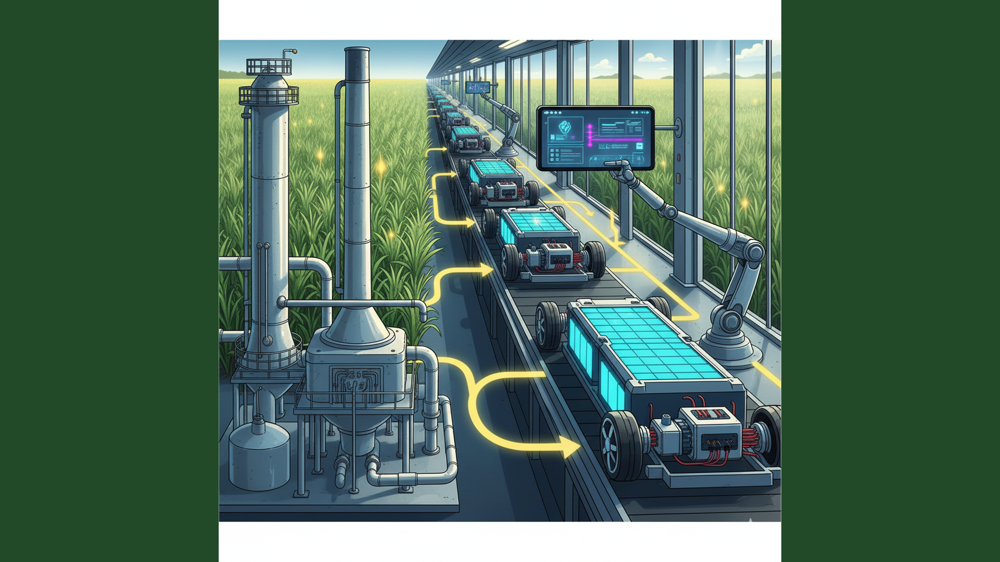
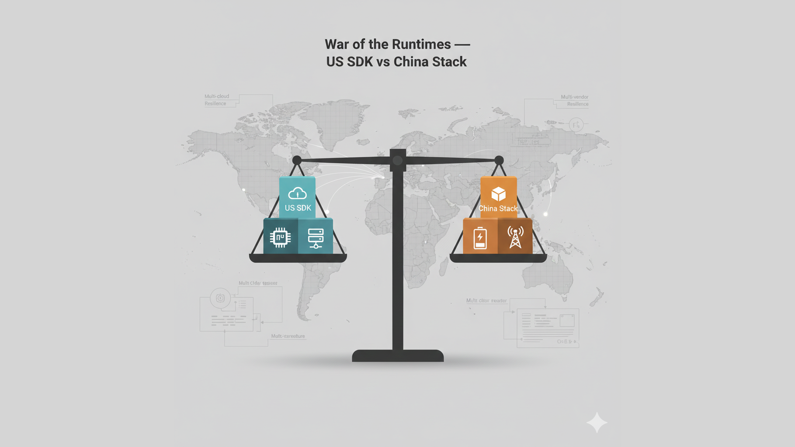
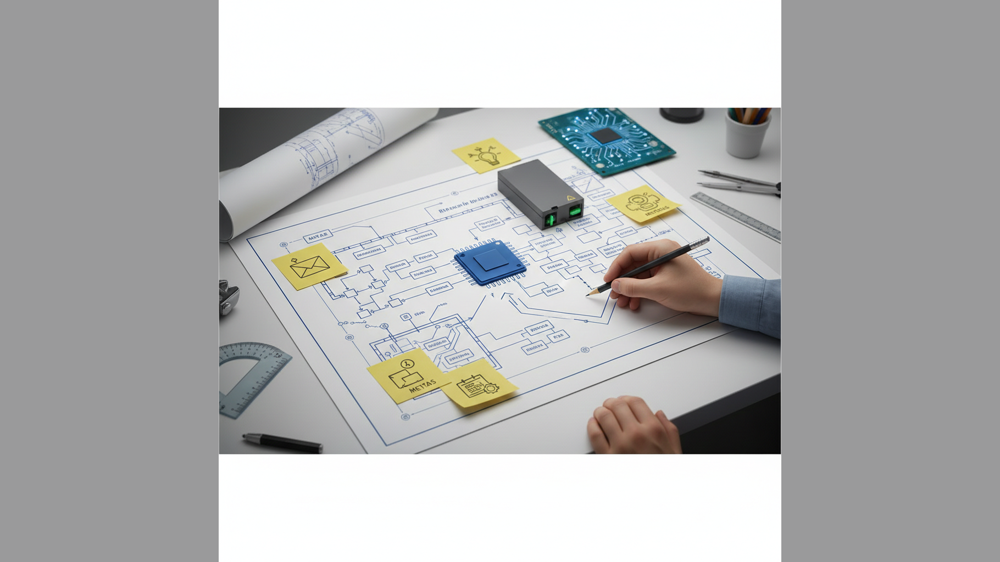

Uma análise em 7 episódios sobre dependência tecnológica, poder e os caminhos para o futuro do Brasil, inspirada em uma conversa sobre a obra de Marcos Napolitano, engenharia de software e a eterna busca do Brasil por sua soberania.

Episódio 01
A introdução à analogia central da série. Como a dependência do petróleo nos anos 70 se transformou na atual vulnerabilidade aos SDKs das "Sete Magníficas" americanas.
Lançamento: 22 de Fevereiro de 2026

Episódio 02
Um mergulho no poder das Big Techs. Como o controle, antes estatal, hoje é algorítmico, exercido através de um "Big Brother" digital que monitora e molda nosso comportamento.
Lançamento: 24 de Março de 2026

Episódio 03
A ascensão da China oferece uma alternativa ao ecossistema americano. Estamos apenas trocando de fornecedor ou há uma chance real de renegociar nossa posição no tabuleiro global?
Lançamento: 23 de Abril de 2026

Episódio 04
Um estudo de caso sobre o sucesso do PIX, que prova a capacidade técnica brasileira para a soberania digital e serve como um farol para o futuro.
Lançamento: 23 de Maio de 2026

Episódio 05
Voltando ao livro de Napolitano, exploramos como as decisões do regime militar criaram uma "dívida técnica" social e de infraestrutura que ainda impacta o desenvolvimento do Brasil.
Lançamento: 22 de Junho de 2026

Episódio 06
Inspirado na decisão de um profissional de se "isolar" do ecossistema das Big Techs, este episódio debate o isolamento técnico como uma forma de resistência individual e sua viabilidade como estratégia nacional.
Lançamento: 22 de Julho de 2026

Episódio 07
O episódio final. Diante do cenário de dependência e da prova de nossa capacidade com o PIX, discutimos os caminhos possíveis. É hora de começar a "refatorar" o código-fonte do nosso futuro?
Lançamento: 21 de Agosto de 2026
Cronograma de Lançamentos:
- Episódio 01: 22 de Fevereiro de 2026
- Episódio 02: 24 de Março de 2026
- Episódio 03: 23 de Abril de 2026
- Episódio 04: 23 de Maio de 2026
- Episódio 05: 22 de Junho de 2026
- Episódio 06: 22 de Julho de 2026
- Episódio 07: 21 de Agosto de 2026
Texto para Anúncio no LinkedIn (Lançamento - 20/02/2026)
Nota: Esta série foi inspirada por reflexões de profissionais da área, preservando o anonimato.
Referências Bibliográficas
- NAPOLITANO, Marcos. 1964: História do Regime Militar Brasileiro. São Paulo: Editora Contexto, 2014.